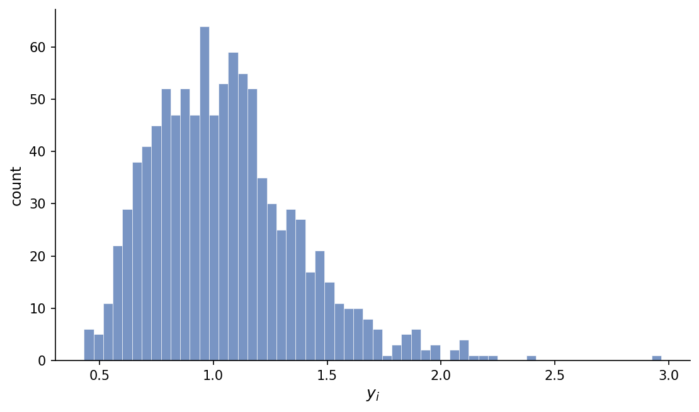
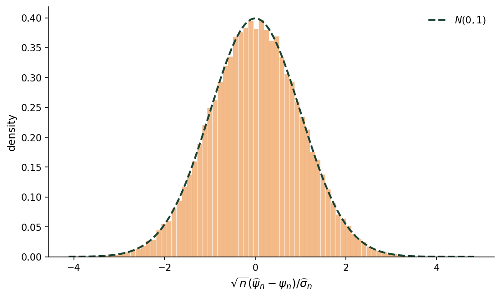
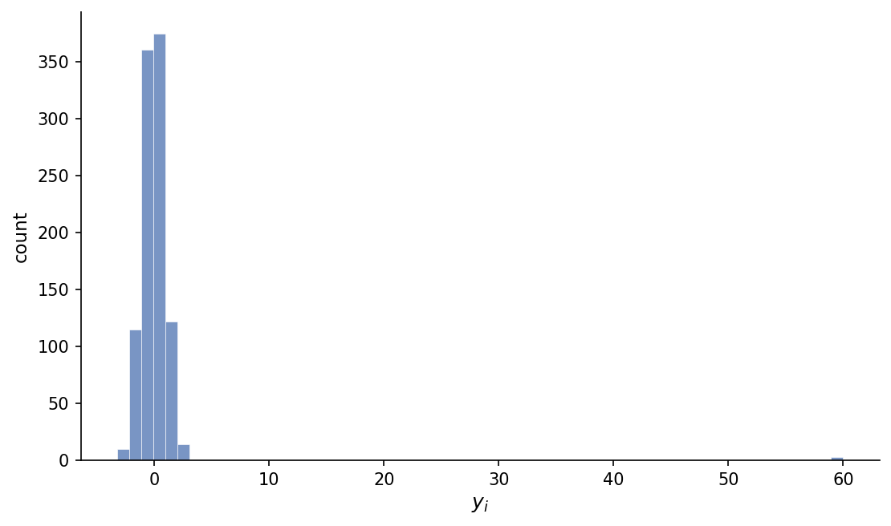
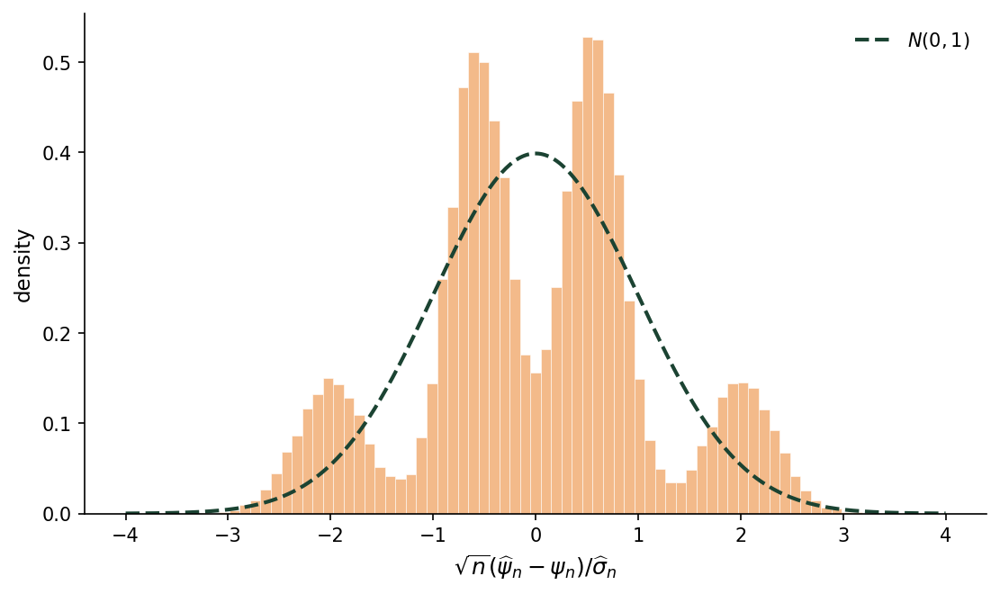

Regularity Diagnostics
In our note on treatment group means, we showed how to construct confidence intervals that were uniformly valid under two regularity assumptions. In this note, we construct diagnostics for whether these assumptions are reasonable in a given finite sample.
Berry–Esseen diagnostic
Define
\[ \lambda_n = \frac{1}{n^{3/2}}\frac{\sum_{i=1}^n |\mathbf{b}_n'\mathbf{u}_{i,n}|^3}{(\mathbf{b}_n'\mathbf{V}_n\mathbf{b}_n)^{3/2}}. \tag{2}\]
The Berry–Esseen condition in Assumption 3(ii) is equivalent to
\[ \lim_{n\to\infty}\sup_{\theta\in\Theta} \lambda_n =0. \]
In the treatment group means note, we showed that the Kolmogorov distance between the linearized statistic and the normal distribution is bounded by a constant multiple of \(\lambda_n\). Therefore if this quantity is large, the normal approximation used by the confidence interval may be unreliable.
Since \(\mathbf{b}_n'\mathbf{u}_{i,n}\) is unobserved, we cannot compute \(\lambda_n\) from the observed data in general. But if we impose
\[ y_{i,1}=y_{i,0}=y_i \qquad \text{for every } i, \tag{3}\]
then \(\mathbf{b}_n'\mathbf{u}_{i,n}\) is proportional to \(y_i-\overline y\) and (2) reduces to
\[ \lambda_n = \frac{1}{n^{3/2}}\frac{\sum_{i=1}^n |y_i-\overline y|^3}{S_n^3}, \tag{4}\]
where
\[ \overline y=\frac{1}{n}\sum_{i=1}^n y_i, \qquad S_n^2=\frac{1}{n}\sum_{i=1}^n (y_i-\overline y)^2. \]
(3) is the sharp null assumption used to construct exact p-values in Fisher randomization inference (see Imbens and Rubin, 2015, Chapter 5). Since \(Y_i = y_i\) under (3), we can compute the feasible diagnostic
\[ \widehat\lambda_n = \frac{1}{n^{3/2}}\frac{\sum_{i=1}^n |Y_i-\overline Y|^3}{\widehat S_n^3}, \tag{5}\]
where
\[ \overline Y=\frac{1}{n}\sum_{i=1}^n Y_i, \qquad \widehat S_n^2=\frac{1}{n}\sum_{i=1}^n (Y_i-\overline Y)^2. \]
A warning can be triggered whenever \(\widehat\lambda_n\) exceeds a maximum tolerance \(\overline\lambda\). The tolerance can be chosen such that the Berry–Esseen bound is below a desired threshold. For example, if we want the Kolmogorov distance under the strong null to be less than \(0.05\), we can set
\[ \overline\lambda = \frac{0.05}{C} \frac{\sqrt{p(1-p)}}{p^2+(1-p)^2} \tag{6}\]
where \(C\) is the constant in the Berry–Esseen bound. Shevtsova (2013) gives the upper bound \(C\leq0.5583\).
Simulation
To illustrate how these diagnostics behave in finite samples, we examine the behavior of the average treatment effect estimator under two finite populations of potential outcomes. In both cases, we simulate data under the strong null and set \(n=1{,}000\) and \(p=0.5\). We set \(\overline\kappa=0.10\) for the variance share diagnostic; for the Berry–Esseen diagnostic, we plug \(C=0.5583\) into (6) to obtain \(\overline\lambda=0.09\).
Well-behaved potential outcomes
The first population consists of \(1{,}000\) draws from a log-normal distribution with \(\sigma=0.3\). Figure 1 displays a histogram of the potential outcomes:

Figure 2 displays the sampling distribution of \(\sqrt{n}(\widehat\psi_n-\psi_n)/\widehat\sigma_n\). It closely tracks \(N(0,1)\), even though the potential outcomes are somewhat skewed. For this finite population, \(\kappa_n=0.035\) and \(\lambda_n=0.059\), which are both below their respective tolerances.

Potential outcomes with outliers
The second population consists of \(997\) standard-normal draws plus \(3\) extreme outliers at \(y=60\). Figure 3 displays a histogram of the potential outcomes:

For this finite population, \(\kappa_n=0.307\) and \(\lambda_n=0.512\), which are both above their respective tolerances. Figure 4 shows that the sampling distribution of \(\sqrt{n}(\widehat\psi_n-\psi_n)/\widehat\sigma_n\) is multimodal. The modes correspond to the number of outliers assigned to treatment. In this case, the standard normal is a poor approximation.
